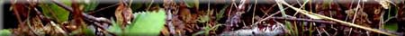

Objectives
Lesson Info
Activities
Materials
Background Info
Notes
Resources
Related Links
Activity #1
Activity #2

To develop an appreciation for the complexity of the forest ecosystem by practising the skills of observing, recording, and collecting during a forest field trip.
| Grade Level | 9 | |
| Subject | Science | |
| Curriculum Correlation | Saskatchewan - The Environment | |
| CEL's | Critical and Creative Thinking, Technological Literacy, Numeracy, Communication. | |
| Duration | 3 - one hour classes or a half day | |
| Group Size | any | |
| Setting | classroom; outdoors | |
| Vocabulary | observation, interpretation, pH. |
Labels, marking pens, pencils, clipboards, map, tree identification guide, collecting containers for both plants and animals, preservative for insects (80% denatured ethanol), tape measure, magnifying glass (l0 X), trowel, light meter, wind velocity gauge, thermometers, soil test kit, copies of the Field Trip Report Sheets.
When you walk into a forest, what do you see? Can you begin to
unravel and categorize the variety of information that surrounds
you? The skills of careful observation and interpretation are
necessary in order to discern the relationships among plants,
animals and micro-organisms that live together in the forest community.
The first observation skill is learning to ask good questions.
Effective questions serve to focus your observations on only those
things that might give you an answer. A clearer picture of the
forest can emerge with the answers to just a few questions. For
example, what kind of trees are there? Are there a lot more of
some kind than of others? Once some basics are established, observations
can develop progressively and begin to probe more deeply into
the subject. Questions can help.
Determine the presence and influence of abiotic factors on forest
life. For example, what is the soil like? Is this area dry or
wet?
Questions about biotic factors begin to show interrelationships.
What signs are there of animal life, scat, tracks, and teeth or
jaw marks on twigs, bark and leaves? The pattern progresses from
a simple inventory to a look at some of the relationships between
the parts. The answers to effective questions provide the first
qualitative survey of forest life. Then, quantitative measurements
can be made in the forest or by collecting samples of plants or
animals for later study or identification in the lab. With proper
preparation, the necessary equipment, and some good questions,
a field trip can be both an adventure and an education.
1. This field trip may be conducted early in the study of forests, but not before you have some basic information about tree identification to make the trip meaningful. Use the list of Saskatchewan trees found in this activity and the reference books listed under resources to identify trees.
2. Choose an area where you can practise skills in tree identification. This is easier in spring or fall when leaves are on the trees. Mixed woodlots provide greater diversity than either pure coniferous or deciduous stands. A small treed area close to the school or your home is appropriate due to ease of access and relevance to you.
3. Review the sample Field Trip Report Sheets and choose one most suitable for you. They are designed to help you start observing details and asking questions.
4. When considering the number of different kinds of plants, keep in mind that you do not need to identify the plants but rather recognize the diversity.
1. Andrews, William A. Investigating Terrestrial Ecosystems. Toronto:
Prentice-Hall, 1986.
2. Guide to Forest Understory Vegetation. Government of Saskatchewan,
1989.
3. Hosie, R.C. Native Trees of Canada. Fitzhenry and Whiteside.
Don Mills. 1979.
4. Lamonte, Sheila. Trees & Shrubs of the Qu-Appelle Valley.
Canada - Saskatchewan Qu'Appelle Valley Management Board. Regina.
l 980.
5. Out To Learn. Saskatchewan Outdoor and Environmental Education
Association and Sask Ed. Regina. 1991.
6. PFRA Shelterbelt Species. Prairie Farm Rehabilitation Authority.
Indian Head.
7. TREEmendous TREES and SHRUBS. TREEmendous SASKATCHEWAN FOUNDATION
INC. Prince Albert, Saskatchewan. 1993
8. Teed, L.M. and J.S. Rowe. Saskatchewan Trees. Tri-Leaf Publications.
Saskatoon, Saskatchewan.
9. TREEmendous Saskatchewan - A STAND FOR OUR FUTURE. Saskatchewan
Environment and Resource Management & Saskatchewan Forestry
Association
1O Dutch Elm Disease. Canadian Forestry Service. Pamphlet.
11 Dwarf Mistletoe. Canadian Forestry Service. Pamphlet.
12. Fall and Spring Cankerworm. Canadian Forestry Service. Pamphlet.
13. Forest Tent Caterpillar. Canadian Forestry Service. Pamphlet.
14. What's Wrong With My Tree? Canadian Forestry Service. Pamphlet.
- Saskatchewan Education Evergreen Curriculum
- Canadian Forests